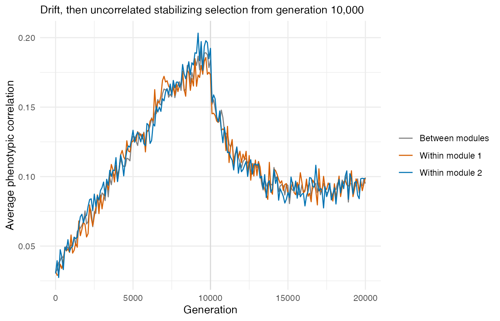
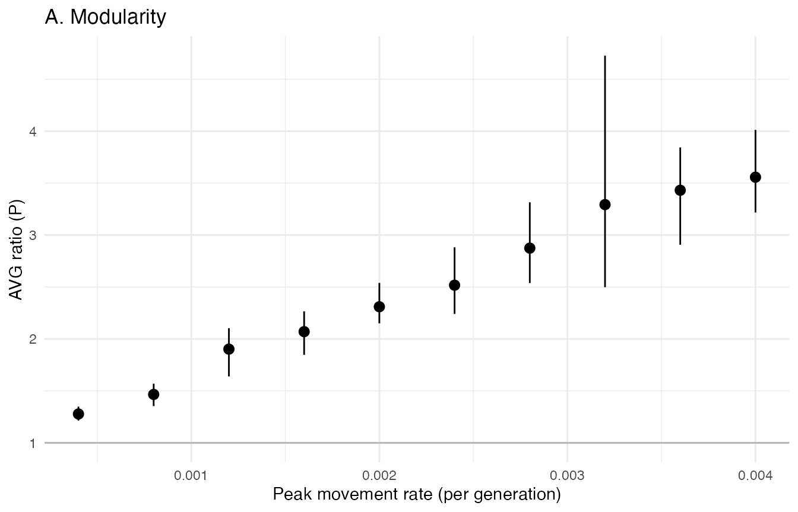
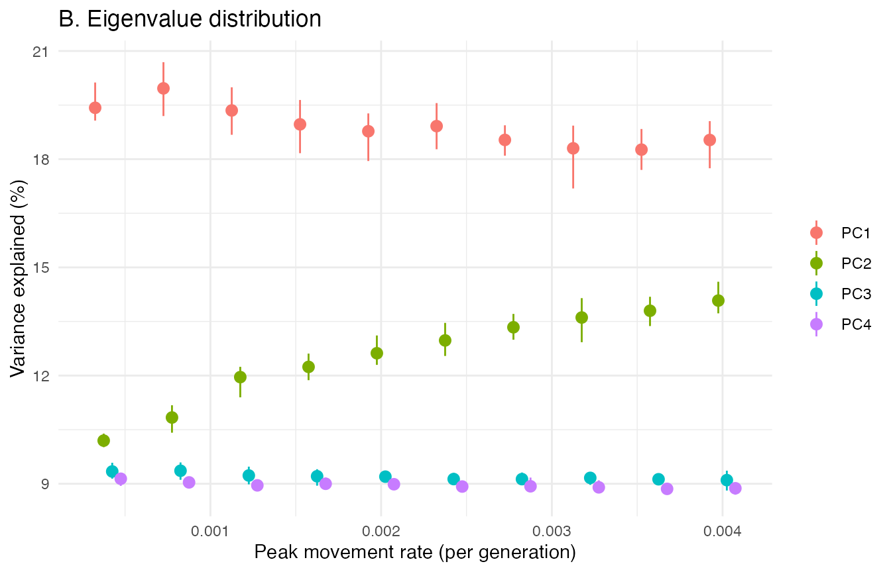
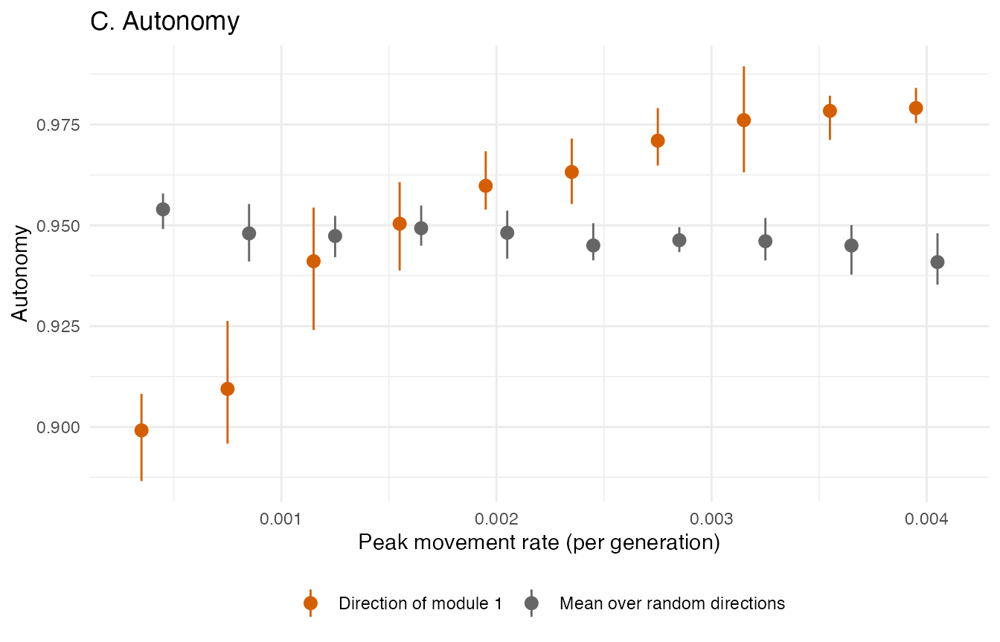
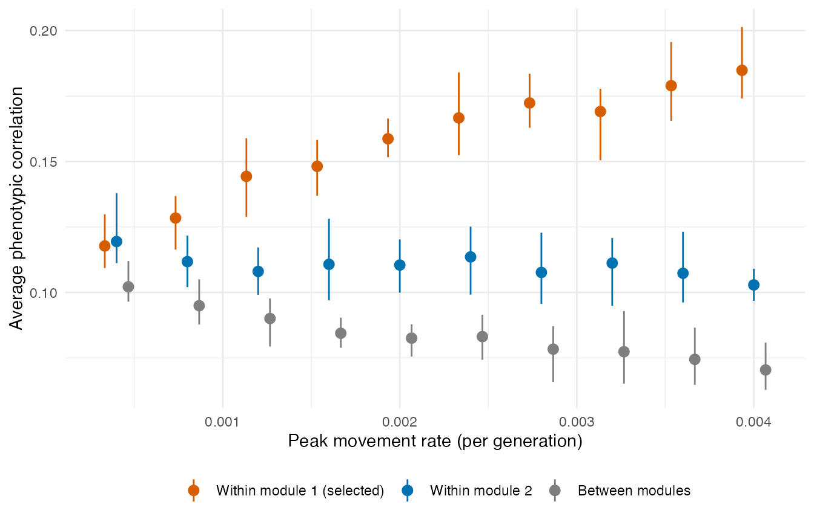
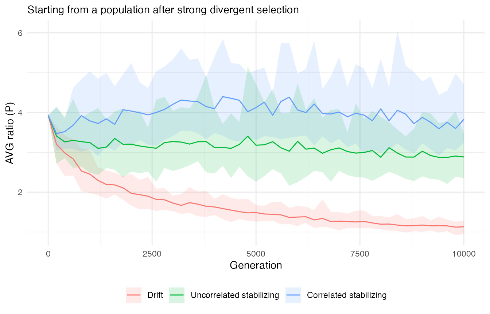

Melo & Marroig (2015, PNAS 112: 470-475, doi:10.1073/pnas.1322632112) showed in individual-based simulations that directional selection can drive the evolution of modularity: when two groups of traits are pushed in different directions, genetic and phenotypic correlations within each group are kept while correlations between the groups disappear. This vignette describes how to repeat those simulations with evomod2 and shows the results of a full run, stored in the package.
The simulations take about 40 minutes per population and 2 GB of
memory, so the code below is not run when the vignette is built. The
script melo_marroig_2015.R in
system.file("examples", package = "evomod2") runs every
step from the command line, one population per process.
Model
Ten traits form two potential modules, traits 1-5 and 6-10. Each of
500 diploid loci has an allelic effect \(y\) and a column of the binary matrix \(B\) that says which traits it affects
(binary_b(); Wagner 1989). With the parameters of the
paper:
library(evomod2)
model <- evomod_model(
binary_b(loci = 500, traits = 10, init_b = 0.25, init_y = "mutations"),
binary_b_mutation(rate = 5e-4, # per allele per generation
sd = 0.02, # mutational effects on y
rate_b = 1e-4, # per entry of B per generation
b_mutation = "random"),
env_sd = 0.8, init_sd = 0.02)
omega_uncorrelated <- diag(10, 10)
omega_correlated <- 10 * (kronecker(diag(2), matrix(0.8, 5, 5)) + diag(0.2, 10))A few details follow the C code used for the paper rather than its text:
- The paper gives 0.02 and 0.8 as the mutational and environmental variances; the C code used them as standard deviations, and so does this reproduction.
- In the C code, a mutation of \(B\)
set the entry to a random value, so entries changed at half the nominal
rate.
b_mutation = "random"reproduces this; the default,"flip", always changes the entry. - New populations start like the C code’s: a quarter of the entries of
\(B\) equal to 1, and allelic effects
built from random mutations (
init_y = "mutations").
The correlated fitness surface has variances \(\Omega_{ii} = 10\) and a correlation of 0.8 between traits of the same module, none between modules.
Protocol
All experiments start from the same population, after 10,000 generations of drift and 10,000 of uncorrelated stabilizing selection:
burnin <- evolve(model, n = 5000, record_every = 100, seed = 2015,
regimes = list(drift(10000),
stabilizing(10000, omega = omega_uncorrelated)))Divergent selection (Fig. 2 of the paper): the optimum of traits 1-5 moves up and that of traits 6-10 down, at rates from 0.0004 to 0.004 per generation, on the correlated fitness surface, for 10,000 generations:
rate <- 0.002
divergent <- evolve(burnin, directional(10000, delta_theta = rate * rep(c(1, -1), each = 5),
omega = omega_correlated))Corridor selection (Fig. 3): only the optimum of
module 1 moves, \(\Delta\theta = r\,(1, 1, 1,
1, 1, 0, 0, 0, 0, 0)\) for a rate \(r\)
(delta_theta = rate * rep(c(1, 0), each = 5)).
Maintenance (Fig. 4): starting from a population after 10,000 generations of strong divergent selection (rate 0.004), 10,000 generations of drift, uncorrelated stabilizing selection or correlated stabilizing selection.
The statistics are those of the paper, computed on the phenotypic (P) matrices at the end of each run:
- the AVG ratio, the average correlation within
modules over the average correlation between modules
(
avg_corr()); - the proportion of variance on each principal
component (
eigen_variance()); - the autonomy in the direction of module 1 and its
mean over random directions (
autonomy(),mean_autonomy()).
The stored results have 10 replicate populations per rate (as in the paper) for divergent and corridor selection, at 10 rates, and 20 replicates per regime for maintenance (100 in the paper). Error bars below are 2.5% and 97.5% quantiles over replicates, as in the paper.
Results
Burn-in
During the burn-in, correlations within and between the (still hypothetical) modules are similar: there is no modularity before directional selection.
b <- P[P$experiment == "burnin", ]
b <- rbind(data.frame(generation = b$generation, value = b$within_1, correlation = "Within module 1"),
data.frame(generation = b$generation, value = b$within_2, correlation = "Within module 2"),
data.frame(generation = b$generation, value = b$between, correlation = "Between modules"))
ggplot(b, aes(generation, value, colour = correlation)) +
geom_vline(xintercept = 10000, colour = "grey85") +
geom_line() +
scale_colour_manual(values = c("grey50", "#D55E00", "#0072B2"), name = NULL) +
labs(x = "Generation", y = "Average phenotypic correlation",
subtitle = "Drift, then uncorrelated stabilizing selection from generation 10,000")
Heritabilities at the end of the burn-in:
round(res$burnin_h2$h2, 2)
#> [1] 0.35 0.36 0.34 0.35 0.35 0.35 0.38 0.34 0.36 0.34Divergent directional selection (Fig. 2)
div <- P[P$experiment == "divergent", ]
ggplot(summ(div, "avg_ratio"), aes(rate, mean)) +
geom_hline(yintercept = 1, colour = "grey70") +
geom_pointrange(aes(ymin = lo, ymax = hi)) +
rate_axis + labs(y = "AVG ratio (P)", title = "A. Modularity")
eig <- summ(div, paste0("eigen_", 1:4))
eig$statistic <- sub("eigen_", "PC", eig$statistic)
ggplot(eig, aes(rate, 100 * mean, colour = statistic)) +
geom_pointrange(aes(ymin = 100 * lo, ymax = 100 * hi), position = position_dodge(width = 0.0002)) +
rate_axis + labs(y = "Variance explained (%)", colour = NULL,
title = "B. Eigenvalue distribution")
aut <- summ(div, c("autonomy_module", "autonomy_mean"))
aut$statistic <- factor(aut$statistic, c("autonomy_module", "autonomy_mean"),
c("Direction of module 1", "Mean over random directions"))
ggplot(aut, aes(rate, mean, colour = statistic)) +
geom_pointrange(aes(ymin = lo, ymax = hi), position = position_dodge(width = 0.0002)) +
scale_colour_manual(values = c("#D55E00", "grey40"), name = NULL) +
rate_axis + labs(y = "Autonomy", title = "C. Autonomy") +
theme(legend.position = "bottom")
Corridor selection (Fig. 3)
cor_runs <- P[P$experiment == "corridor", ]
cs <- summ(cor_runs, c("within_1", "within_2", "between"))
cs$statistic <- factor(cs$statistic, c("within_1", "within_2", "between"),
c("Within module 1 (selected)", "Within module 2", "Between modules"))
ggplot(cs, aes(rate, mean, colour = statistic)) +
geom_pointrange(aes(ymin = lo, ymax = hi), position = position_dodge(width = 0.0002)) +
scale_colour_manual(values = c("#D55E00", "#0072B2", "grey50"), name = NULL) +
rate_axis + labs(y = "Average phenotypic correlation") +
theme(legend.position = "bottom")
Maintenance of modularity (Fig. 4)
mt <- P[P$experiment == "maintenance", ]
mt$regime <- factor(mt$regime, c("drift", "uncorrelated", "correlated"),
c("Drift", "Uncorrelated stabilizing", "Correlated stabilizing"))
ms <- aggregate(avg_ratio ~ regime + generation, mt,
function(x) c(mean = mean(x), lo = unname(quantile(x, 0.025)),
hi = unname(quantile(x, 0.975))))
ms <- data.frame(ms[c("regime", "generation")], ms$avg_ratio)
ggplot(ms, aes(generation, mean, colour = regime, fill = regime)) +
geom_ribbon(aes(ymin = lo, ymax = hi), alpha = 0.15, colour = NA) +
geom_line() +
labs(x = "Generation", y = "AVG ratio (P)", colour = NULL, fill = NULL,
subtitle = "Starting from a population after strong divergent selection") +
theme(legend.position = "bottom")
How the reproduction compares
- Before directional selection there is no modularity: at the end of the burn-in the AVG ratio is about 1, and heritabilities are 0.34-0.38 (0.3-0.5 in the paper).
- Divergent selection produces modularity, more so when the optimum moves faster (Fig. 2): from a peak movement rate of 0.0004 to 0.0040 per generation, the AVG ratio rises from 1.28 to 3.56, the correlation between modules falls from 0.093 to 0.044, the proportion of variance on the second principal component (the contrast between modules) rises from 10.2% to 14.1%, and the autonomy in the direction of module 1 rises from 0.90 to 0.98 while the mean autonomy stays at about 0.95.
- Corridor selection integrates the selected module (Fig. 3): the correlation within module 1 rises from 0.12 to 0.18, the module under stabilizing selection stays at about 0.11 (the paper describes a slight increase), and correlations between modules fall from 0.10 to 0.07.
- Once established, modularity is kept by correlated stabilizing selection and lost under drift (Fig. 4): starting from an AVG ratio of 3.93, after 10,000 generations it is 3.83 under correlated stabilizing selection, 2.88 under uncorrelated stabilizing selection and 1.13 under drift.
- The paper reports that between-module correlations drop to nearly zero under strong selection; here they reach 0.04. All phenotypic correlations are low in this model, because environmental variance makes up about two thirds of the phenotypic variance.
The stored results have fewer replicate populations than the paper for the maintenance experiment (20 per regime instead of 100), and the maintenance traces are thinned to every 200 generations.
Running it yourself
script=$(Rscript -e 'cat(system.file("examples", "melo_marroig_2015.R", package = "evomod2"))')
Rscript $script burnin results # about 80 minutes
Rscript $script divergent 0.002 1 results # one population, about 40 minutes
Rscript $script corridor 0.002 1 results
Rscript $script divergent 0.004 1 results # also saves the maintenance seed
Rscript $script maintenance correlated 1 results
Rscript $script summarise results melo_marroig_2015.rdsRun the populations in parallel, one process each (for example with
xargs -P), then plot the summary as above with
res <- readRDS("melo_marroig_2015.rds").